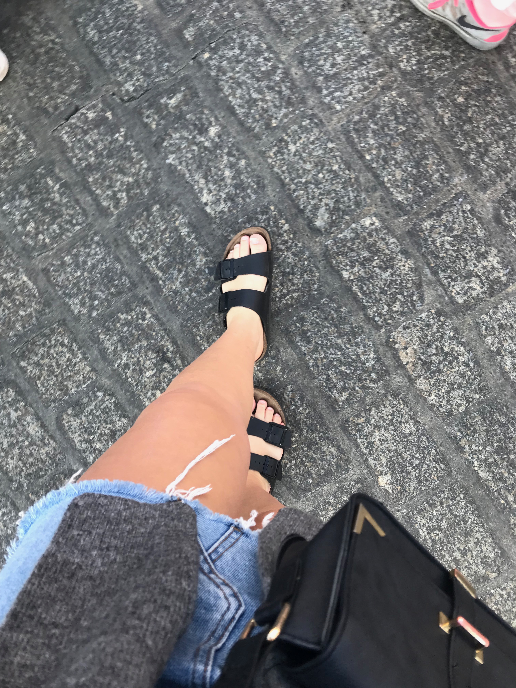
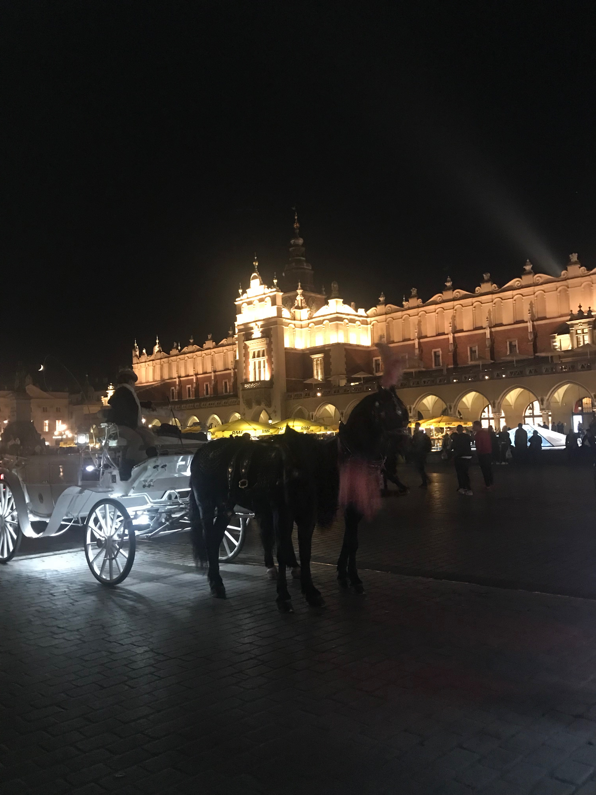
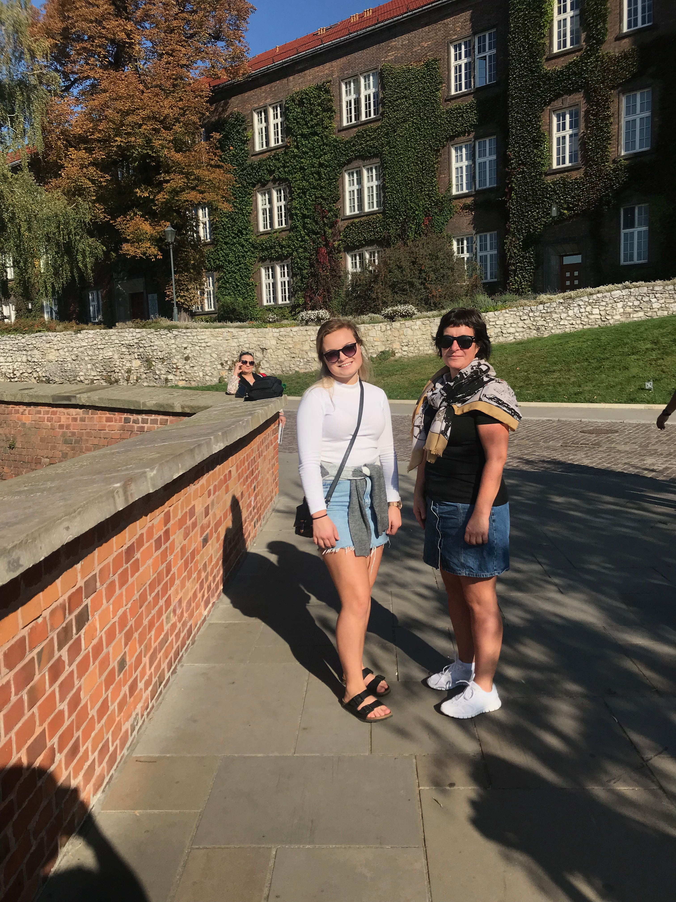

<b>Rhodos
Framsida
Portugal
Rhodos
Tyskland
Polen
I haustferien 2018 var eg saman med familien min og ein vennefamilie til Krakow i Polen. Vi reiste på ein torsdag og kom heim ein på søndag, så vi var ikkje borte så lenge. Vi fekk difor ikkje så god tid til å gjere eller sjå alt vi ville. Men eine dagen vart brukt til shopping på Galeria Krakowska. Den andre dagen reiste vi for å besøkje saltruvene. Det var utruleg flott og veldig interesant,samt som det også var litt skummelt. Etter besøket i saltgruvene var vi på eit museum om 2.verdskrig. Frå museumet og tilbake til sentrum leigde vi ein liten bil, som kunne ligne på ein golfbil.
  
Nedanfor er ei oversikt over temperaturen i Krakow når vi var der:
Dag
Temperatur
Torsdag
26 grader
Fredag
25 grader
Laurdag
27 grader
Søndag
22 grader